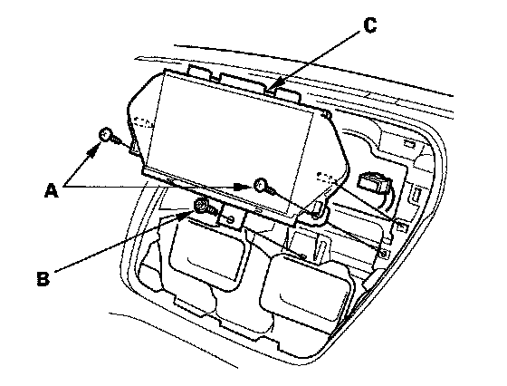

Navigation Display: Service and Repair
Display Unit Removal/Installation1. Remove the dashboard upper visor.

2. Remove the two screws (A) and bolt (B), then remove the display unit (C).
3. Disconnect the navigation display connector (D).
4. Install the unit in the reverse order of removal. Be careful not to drop the forward bolt behind the dashboard.